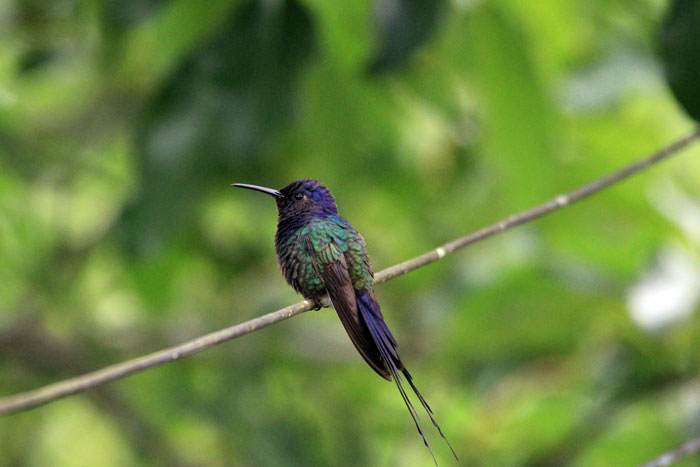
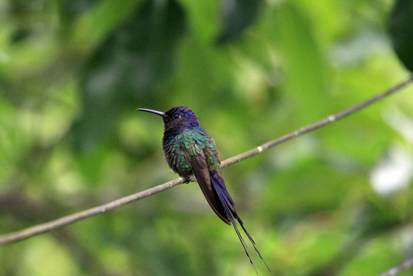
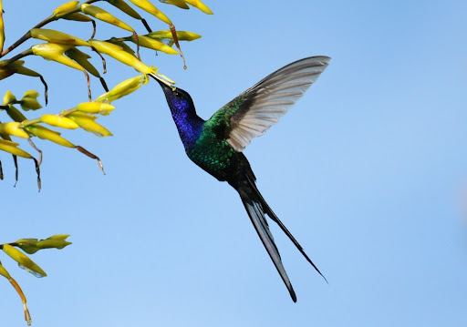

Beija-Flor Tesoura
 


INFORMAÇÕES SOBRE O ANIMAL
- Nome Científico: Eupetomena macroura
(Gmelin, 1788) - Nomes Populares: colibri, pica-flor, cuitelo, chupa-flor, chupa-mel, binga, guanambi, guinumbi, guainumbi e guanumbi
- Atualmente a espécie não corre risco de extinção.
Classificação Biológica
- Dominio: Eukaryota
- Reino: Animalia
- Filo: Chordata
- Classe Aves
- Ordem: Apodiformes
- Família: Trochilidae
- Subfamília: Trochilinae
- Espécie: E. macroura
Nutrição Geral e Hábitos Alimentares
- Tipo de Nutrição: Heterotrófico
- Néctar das flores: Assim como outros beija-flores, o beija-flor-tesoura se alimenta principalmente do néctar que retira de flores. Ele desempenha um papel importante na polinização de muitas plantas.
- Pequenos insetos: Além do néctar, o beija-flor-tesoura também se alimenta de pequenos insetos. Ele caça esses insetos com grande habilidade em voos curtos.
- Algumas aranhas: O beija-flor-tesoura também é conhecido por se alimentar de algumas aranhas.
- Esses hábitos alimentares permitem que o beija-flor-tesoura desempenhe um papel ecológico importante como polinizador de flores e plantas da natureza. Além disso, ele é um dos visitantes mais comuns de bebedouros de água com açúcar, em cidades ou em sítios.
Morfologia Básica do Corpo
- Tamanho e Peso: O beija-flor-tesoura mede entre 15 e 18 centímetros de comprimento, sendo um dos maiores beija-flores brasileiros. Ele pesa em torno de 6-11 gramas.
- Cauda: A característica mais notável do beija-flor-tesoura é a sua cauda longa e profundamente bifurcada, que toma quase 2/3 do seu tamanho total.
- Cabeça e Pescoço: A cabeça e o pescoço do beija-flor-tesoura são de um profundo azul violeta.
- Plumagem: O restante da plumagem é verde-escuro iridescente.
- Bico: O bico do beija-flor-tesoura é ligeiramente curvado para baixo, preto e tem 2,2 centímetros de comprimento.
- As fêmeas são quase iguais aos machos, sendo um pouco menores e mais pálidas. Os indivíduos jovens são como as fêmeas, mas a cabeça é particularmente mais pálida e tingida de marrom.
Coloração e Camuflagem
- Cabeça, Pescoço e Cauda: A cabeça, o pescoço e a cauda do beija-flor-tesoura são de um profundo azul violeta.
- Resto do Corpo: O restante da plumagem é verde-escuro iridescente.
- Mancha Branca: Ele possui uma pequena mancha branca atrás dos olhos.
- Em relação à camuflagem, os beija-flores em geral, incluindo o beija-flor-tesoura, não são conhecidos por terem características de camuflagem específicas. No entanto, a coloração iridescente e brilhante de suas penas pode ajudar a confundir predadores em certas condições de luz. Além disso, as fêmeas geralmente possuem cores mais discretas, o que pode ajudar na camuflagem quando estão no ninho cuidando dos filhotes.
Comportamento
- Comportamento geral: O Beija-flor-tesoura é conhecido por seu comportamento audacioso. Ele é um dos maiores e mais briguentos beija-flores, sendo muito territorialista e extremamente agressivo, principalmente na época da reprodução, quando é capaz de atacar outros pássaros muito maiores e pequenos mamíferos. Ele não costuma ter medo de seres humanos, aproximando-se das pessoas para se alimentar nas garrafas com água e açúcar ou nas flores de seus jardins.
- Estratégias de Caça: Assim como outros beija-flores, o Beija-flor-tesoura se alimenta basicamente de néctar de flores, mas também caça pequenos insetos com grande habilidade em voos curtos. Ele tem um papel importante na polinização de muitas plantas.
- Defesa e Sobrevivência: O Beija-flor-tesoura é muito territorialista e defende seu território com agressividade. Quando a alimentação é limitada, os jovens permanecem no ninho por até 35 dias. Durante a época de reprodução, o macho fica responsável por defender o território enquanto a fêmea realiza a incubação dos ovos por cerca de 16 dias.
Ocorrência no Brasil
- Biomas de Ocorrência no Brasil
O Beija-flor-tesoura pode ser encontrado em áreas semiabertas, bordas de florestas, savanas e campos.
Ele é comumente encontrado em grandes regiões urbanizadas, além de viver em locais possuidores de áreas semiabertas, parques, jardins e bordas de florestas. - Distribuição no Território Nacional
O Beija-flor-tesoura ocorre em quase todo o território brasileiro, com exceção de algumas regiões da Amazônia.
Ele está presente desde as Guianas até a Bolívia e o Paraguai.
No Brasil, ele é encontrado do norte, centro-oeste e sudeste, incluindo a Mata Atlântica de Minas Gerais e Espírito Santo.
Ele também é encontrado no nordeste do Brasil, incluindo o sul do Maranhão, Piauí e Ceará, bem como em Minas Gerais. - Mapa de Ocorrência no Brasil
Aspectos Reprodutivos
- Acasalamento: Durante o período de acasalamento, o macho faz a corte pairando em frente à fêmea, que depois o acompanha nas manobras aéreas.
- Ninho: O ninho, que tem formato de tigela, é construído em galhos – sendo composto por musgos e líquens, aderidos com teias de aranha.
- Incubação: As fêmeas da espécie realizam a incubação dos ovos por cerca de 16 dias.
- Alimentação dos Filhotes: Após o nascimento, a fêmea alimenta os filhotes principalmente com insetos.
- Defesa do Território: Enquanto a fêmea cuida dos filhotes, o macho fica responsável por defender o território.
- Independência dos filhotes: Os filhotes do beija-flor-tesoura deixam o ninho em cerca de 24 dias.

Beija Flor Tesoura se Alimentando.